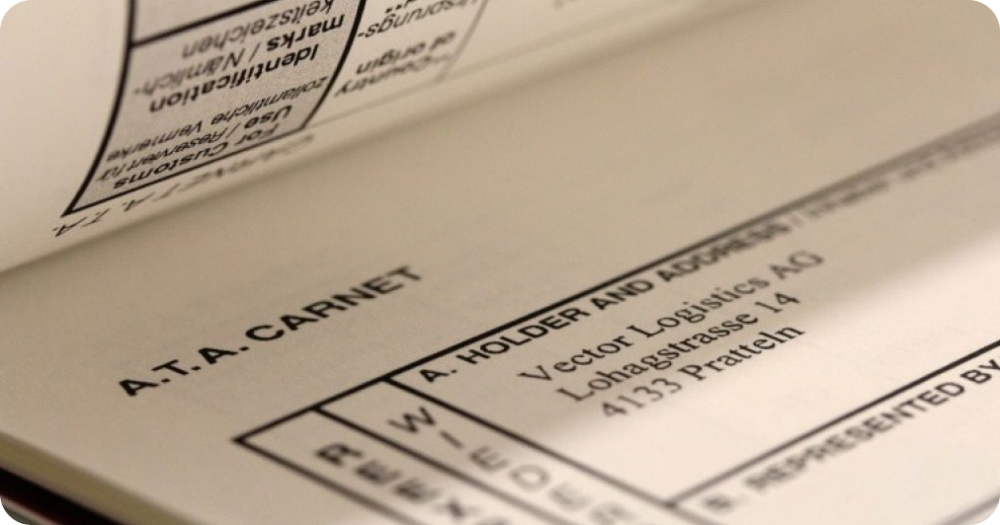

<main class="main servPage">
    <div class="serv forbg">
        <div class="serv__bg1 bgtype">
            <picture>
                
            </picture>
        </div>
        <div class="serv__bg2 bgtype">
            <picture>
                
            </picture>
        </div>
        <div class="serv__bg1 bgtype">
            <picture>
                
            </picture>
        </div>
        <div class="container">
            <div class="breads">
                <div class="breads__prev">
                    <svg class="breads__arrow" xmlns="http://www.w3.org/2000/svg" width="16" height="16" viewBox="0 0 16 16" fill="none">
                        <path d="M10.332 12.6668L5.66536 8.00016L10.332 3.3335" stroke="#666666" stroke-width="1.5" stroke-linecap="round" stroke-linejoin="round"/>
                    </svg>
                    <a href="services.html">Назад</a>
                    <svg class="breads__point" xmlns="http://www.w3.org/2000/svg" width="18" height="18" viewBox="0 0 18 18" fill="none">
                        <path d="M8.5 11C9.32843 11 10 10.3284 10 9.5C10 8.67157 9.32843 8 8.5 8C7.67157 8 7 8.67157 7 9.5C7 10.3284 7.67157 11 8.5 11Z" fill="#B1B1B1"/>
                    </svg>
                </div>
                <a href="/">Главная</a>
                <svg xmlns="http://www.w3.org/2000/svg" width="16" height="16" viewBox="0 0 16 16" fill="none">
                    <path d="M7 4.53075L10.2346 7.76537L7 11" stroke="#B1B1B1" stroke-width="1.5" stroke-linecap="round" stroke-linejoin="round"/>
                </svg>    
                <a href="services.html">Услуги</a>
                <svg xmlns="http://www.w3.org/2000/svg" width="16" height="16" viewBox="0 0 16 16" fill="none">
                    <path d="M7 4.53075L10.2346 7.76537L7 11" stroke="#B1B1B1" stroke-width="1.5" stroke-linecap="round" stroke-linejoin="round"/>
                </svg>                
                <span>Проведение мероприятий</span>
            </div>

            <h1 class="big-title serv__title">Юридические услуги</h1>
            <div class="serv__top">
                <div class="serv__left">
                    <div class="serv__slider">
                        
                        
                        
                        
                    </div>
                    <div class="serv__info">
                        <div class="serv__info--title">Оформление, удостоверение и выдача Карнетов АТА</div>
                        <div class="serv__info--content">
                            <div class="serv__text editor">
                                <p>
                                    <strong>Carnet ATA</strong> является стандартным международным таможенным документом, 
                                    признаваемым в качестве таможенной декларации и позволяющий беспошлинно 
                                    ввезти, а также идентифицировать временно ввозимые товары и включающий в 
                                    себя действующую в международном обращении финансовую гарантию по уплате 
                                    ввозных таможенных пошлин, налогов и сборов.
                                </p>
                                <b>
                                    Статья 2. Порядок освидетельствования обстоятельств непреодолимой силы(форс-мажор)
                                </b>
                                <ul>
                                    <li>
                                        Коммерческие образцы: драгоценности, украшения, часы, кожаные товары, и т.д.;
                                   </li>
                                    <li>
                                        Товары для ярмарок и выставок, выставочные кабины/стенды и т.д;
                                    </li>
                                    <li>
                                        Предметы старины, картины и другие произведения искусства;
                                    </li>
                                    <li>
                                        Профессиональное оборудование: СМИ, звук и радиовещание телевидение, 
                                        кинематографическое оборудование, музыкальные инструменты, костюмы, 
                                        театральные оборудование, механическое оборудование, 
                                        электрооборудование, инженерное оборудование, хирургическое 
                                        оборудование, оборудование для археологов, зоологов, конферансье, 
                                        лекторов, спортсменов, и т.д.
                                    </li>
                                    <li>
                                        Т.е. применения Карнет АТА очень удобно при вывозе товаров и образцов 
                                        для демонстрации на выставках, ярмарках и т.д.
                                    </li>
                                </ul>
                            </div>

                            <div class="serv__numbers">
                                <b class="serv__numbers--title">Преимущества применения карнета АТА:</b>
                                <div class="serv__numbers--items">
                                    <div class="serv__numbers--item">
                                        <b class="gradient-text">01</b>
                                        <p>
                                            Заменяет таможенную декларацию и освобождает декларанта от 
                                            необходимости подачи электронной декларации;
                                        </p>
                                    </div>
                                    <div class="serv__numbers--item">
                                        <b class="gradient-text">02</b>
                                        <p>
                                            Обеспечивает ускоренное таможенное оформление, которое сводится к 
                                            тому, что сотрудник таможни делает специальные отметки на 
                                            соответствующих листах карнета; 
                                        </p>
                                    </div>
                                    <div class="serv__numbers--item">
                                        <b class="gradient-text">03</b>
                                        <p>
                                            Освобождает декларанта от уплаты таможенных платежей, в т.ч. сборов 
                                            за таможенное оформление, обеспечения уплаты таможенных платежей;
                                        </p>
                                    </div>
                                    <div class="serv__numbers--item">
                                        <b class="gradient-text">04</b>
                                        <p>
                                            Является международной финансовой гарантией уплаты таможенных 
                                            платежей (гарантом выступает Торгово-промышленная палата страны 
                                            ввоза/вывоза);
                                        </p>
                                    </div>
                                    <div class="serv__numbers--item">
                                        <b class="gradient-text">05</b>
                                        <p>
                                            Дает возможность посещать до 10 стран в течение всего срока 
                                            действия документа (одного года).
                                        </p>
                                    </div>
                                </div>
                            </div>

                            <div class="serv__table">
                                <b>Тариф на выдачу Карнет АТА</b>

                                <table>
                                    <thead>
                                        <tr>
                                            <th>Наименование услуги</th>
                                            <th>Стоимость</th>
                                        </tr>
                                    </thead>
                                    <tbody>
                                        <tr>
                                            <td>Оформление и выдача стандартного комплекта Карнет АТА</td>
                                            <td>30 МРП</td>
                                        </tr>
                                        <tr>
                                            <td>Один бланк дополнительного листа Карнет АТА</td>
                                            <td>30 МРП</td>
                                        </tr>
                                        <tr>
                                            <td>
                                                Ускоренное оформление и выдача Карнет АТА, (в течение 3-х 
                                                рабочих дней с даты регистрации заявления)
                                            </td>
                                            <td>
                                                + 30% от общей стоимости услуги оформления и выдачи Карнет АТА
                                            </td>
                                        </tr>
                                        <tr>
                                            <td>
                                                Обеспечение в виде страхового полиса; внесения на депозит или 
                                                предоставление гарантии банка (возвращается при условии 
                                                обратного ввоза товара и возврата надлежаще оформленного Карнет 
                                                АТА)
                                            </td>
                                            <td>
                                                В размере 40% от общей стоимости товара оформляемого по Карнет 
                                                АТА или оформление страхового полиса в размере 1% от стоимости 
                                                товара.
                                            </td>
                                        </tr>
                                    </tbody>
                                </table>
                            </div>
                        </div>
                    </div>
                </div>
                <div class="serv__right">
                    <div class="serv__contact">
                        <div class="serv__contact--title">Контакты:</div>
                        <div class="serv__contact--name">
                            <b>Мухамедьяров Адиль</b>
                            <p>Юрист</p>
                        </div>
                        <div class="serv__contact--item">
                            
                            <div class="serv__contact--links">
                                <a href="">+7 7172 27-96-16</a>
                                <span>27-90-54; 27-90-55; 27-90-56;</span>
                                <span>27-88-48 (вн. 207)</span>
                            </div>
                        </div>
                    </div>
                    <div class="serv__btn" onClick="openModal()">Оставить заявку</div>
                </div>
            </div>
        </div>
        <div class="serv__bot">
            <section class="serv__works">
                <div class="container">
                    <div class="small-width">
                        <div class="serv__display">
                            <h2>Наша работа в цифрах</h2>
                            <div class="serv__elem">
                                <div class="serv__elem--numbers">
                                    <div class="serv__elem--number">
                                        <b class="gradient-text">55</b>
                                        <p>проведено зарубежных профильных выставок</p>
                                    </div>
                                    <div class="serv__elem--number">
                                        <b class="gradient-text">11</b>
                                        <p>туристических выставок</p>
                                    </div>
                                    <div class="serv__elem--number">
                                        <b class="gradient-text">2</b>
                                        <p>гуманитарных выставок</p>
                                    </div>
                                    <div class="serv__elem--number">
                                        <b class="gradient-text">5</b>
                                        <p>байеров приглашенных на отечественные выставки</p>
                                    </div>
                                </div>
                                <div class="serv__elem--bot">
                                    Также, нашей командой была организована выставка «Лучший товар 
                                    Казахстана -2017»и Премия Президента РК «Алтын Сапа» 2017 года, где участие 
                                    приняли 144 отечественных производителей.
                                </div>
                            </div>
                        </div>
                    </div>
                </div>
            </section>
    
            <section class="include">
                <div class="container">
                    <div class="small-width">
                        <div class="serv__display">
                            <h2>Что входит в услугу:</h2>
                            <ul class="serv__list">
                                <li>
                                    
                                    <p>Консультации по экспорту и импорту</p>
                                </li>
                                <li>
                                    
                                    <p>Экспортная диагностика, услуги маркетинга</p>
                                </li>
                                <li>
                                    
                                    <p>Поиск зарубежных партнеров, а также проверка компаний на благонадежность</p>
                                </li>
                                <li>
                                    
                                    <p>Сбор и дальнейшая работа с коммерческими предложениями</p>
                                </li>
                                <li>
                                    
                                    <p>Размещение коммерческих предложений</p>
                                </li>
                                <li>
                                    
                                    <p>
                                        Консультации по законодательству (форс-мажоры, заключение внешнеорговых сделок, 
                                        необходимая документаця при экспорте и импорте, карнет - ата)
                                    </p>
                                </li>
                            </ul>
                        </div>
                    </div>
                </div>
            </section>
    
            <section class="serv__docs">
                <div class="serv__display">
                    <h2>Документы</h2>
                    <div class="serv__docs--items">
                        <a href="" class="serv__docs--item">
                            
                            <p>
                                Образец-доверенности-на-представителя--(на-русском...
                            </p>
                        </a>
                        <a href="" class="serv__docs--item">
                            
                            <p>
                                Образец_доверенности_на_представителя_в_таможенных_...
                            </p>
                        </a>
                        <a href="" class="serv__docs--item">
                            
                            <p>
                                Приказ.pdf
                            </p>
                        </a>
                    </div>
                </div>
            </section>
        </div>
    </div>
</main>